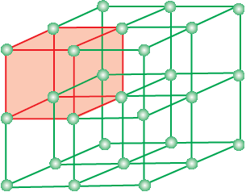
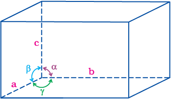
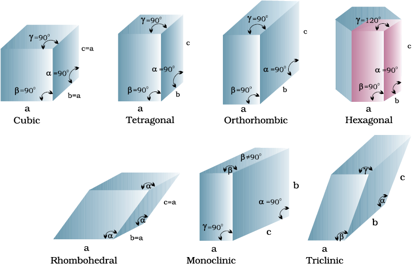
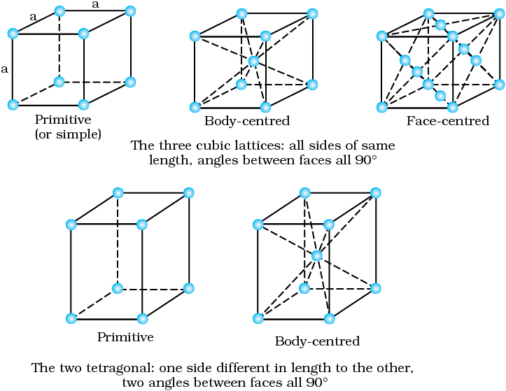
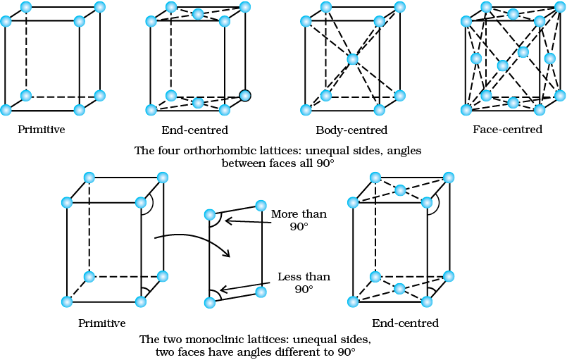
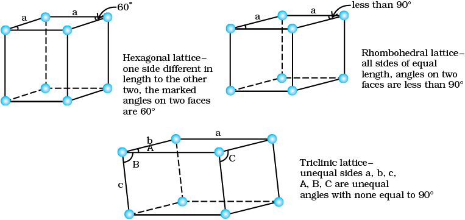

The main characteristic of crystalline solids is a regular and repeating pattern of constituent particles. If the three dimensional arrangement of constituent particles in a crystal is represented diagrammatically, in which each particle is depicted as a point, the arrangement is called crystal lattice. Thus, a regular three dimensional arrangement of points in space is called a crystal lattice.

A portion of a three dimensional cubic lattice and its unit cell.
There are only 14 possible three dimensional lattices. These are called Bravais Lattices (after the French mathematician who first described them). The following are the characteristics of a crystal lattice:
(a) Each point in a lattice is called lattice point or lattice site.
(b) Each point in a crystal lattice represents one constituent particle which may be an atom, a molecule (group of atoms) or an ion.
(c) Lattice points are joined by straight lines to bring out the geometry of the lattice. Unit cell is the smallest portion of a crystal lattice which, when repeated in different directions, generates the entire lattice.
A unit cell is characterised by:
Its dimensions along the three edges, a, b and c. These edges may or may not be mutually perpendicular.
The angles between the edges, α (between b and c) β (between a and c) and γ (between a and b). Thus, a unit cell is characterised by six parameters, a, b, c, α, β and γ.

Illustration of parameters of a unit cell.
Unit cells can be broadly divided into two categories, primitive and centred unit cells.
When constituent particles are present only on the corner positions of a unit cell, it is called as primitive unit cell.
When a unit cell contains one or more constituent particles present at positions other than corners in addition to those at corners, it is called a centred unit cell. Centred unit cells are of three types:
(i) Body-Centred Unit Cells: Such a unit cell contains one constituent particle (atom, molecule or ion) at its body-centre besides the ones that are at its corners.
(ii) Face-Centred Unit Cells: Such a unit cell contains one constituent particle present at the centre of each face, besides the ones that are at its corners.
(iii) End-Centred Unit Cells: In such a unit cell, one constituent particle is present at the centre of any two opposite faces besides the ones present at its corners.
In all, there are seven types of primitive unit cells.

Seven primitive unit cells in crystals
Their characteristics along with the centred unit cells they can form have been listed below
Horizontally scrollable table
| Crystal system | Possible Variations | Axial distances or edge lengths | Axial angles | Examples |
| Cubic | Primitive, Body-centred, Face-centred | a=b=c | α = ß = γ= 90° | NaCl, Zinc blende, Cu |
| Tetragonal | Primitive, Body-centred | a = b ≠ c | α = ß = γ = 90° | White tin, SnO2, TiO2, CaSO4 |
| Orthorhombic | Primitive, Body-centred, Face-centred, End centred | a ≠b ≠ c | α = ß = γ = 90° | Rhombic sulphur, KNO3, BaSO4 |
| Hexagonal | Primitive | a = b ≠ c | α = ß =90° γ = 120° |
Graphite, ZnO,CdS, |
| Rhombohedral or Trigonal | Primitive | a = b = c | α = ß = γ ≠ 90° | Calcite (CaCO3), HgS (cinnabar) |
| Monoclinic | Primitive, End-centred | a ≠ b ≠c | α = γ =90° ß ≠ 90° |
Monoclinic sulphur, Na2SO4.10H2O |
| Triclinic | Primitive | a ≠ b ≠ c | α ≠ ß ≠ γ ≠ 90° |
K2Cr2O7, CuSO4. 5H2O, H3BO3 |


